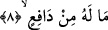

7. Rabbinin azabı mutlaka vuku bulacaktır.
Yâni o azap mutlaka size gelecektir. Burası kasemin cevabıdır. Fethu’r-Rahman’da
müellif şöyle der: Burada bahsedilen azap, dünyevî azap değildir, âhirette kâfirlerin
karşılaşacağı azaptır.” İrşâd isimli eserde, bir önceki sûrenin son kısmının da bu
mânâda olduğu vurgulanır.
8. Ona engel olacak bir şey yoktur.
Yâni azabı kendisinden uzaklaştıracak bir kimse yoktur. Nitekim, “Allah’tan geri
çevrilmesi mümkün olmayan bir gün” (eş-Şûra 42 /47) âyetinde de aynı mânâ
mündemiçtir. O azâbı uzaklaştıracak hiç kimse yoktur, aksine her hâlükârda bu azâb
gerçekleşecektir.
Bazı ulema def’ ile ref’ arasındaki farkı şöyle belirtmiştir: Def’ bir azap henüz vâki
olmadan önce, ref’ ise vuku bulduktan sonra kullanılan fiillerdir. Bu hususların yeminle
birlikte getirilmesinden murad bütün bunların; Allah’ın kudretinin büyüklüğü, ilminin
kemâli ve kulların bütün amellerini ayrıntılarıyla bilmesine delâlet eden hikmet-i
ilahiyesinin iktizâsı olduğunu bildirmek, ayrıca yemin edilerek haber verilen bu şeylerin
doğruluğuna şâhid olacak tutanakların mevcûdiyetlerinin bulunduğunu ifâde etmek
içindir.
Cübeyr b. Mut’im şöyle demiştir: Rasûlullah (s.a.) ile Bedir esirleri hakkında
konuşmak için Medine’ye geldim. Allah Rasûlü (s.a.) sabah namazında Tûr sûresini
okuyor, sesi ta mescidin dışına taşıyordu. Ne zamanki
âyetine geldi, işte
onu duyduğum an sanki kalbim duracak gibi oldu ve kalbime gelen ilk düşünce
İslâmiyete girmek olmuştu. Üzerime azabın indirilme korkusuyla hemen müslüman
oldum. Öyle ki, müslüman olmadan yerimden kıpırdadığımda azabın bana ulaşacağını
zannediyordum.
Bu çeşit bir etkilenme Hz. Ömer’de de vuku bulmuştu. Hz. Ömer, Erkam (r.a.)’ın
evine gittiğinde Rasûlullah (s.a.)’i Tâhâ suresini okurken duydu, kalbi yumuşayıp
müslüman oldu. İslâm’ı kabullenmeye hazır kalpler en küçük bir şeyle etkilenirler.
Özellikle de vâiz Kur’ân-ı Azim veya okuyan Rasûl-i Kerim (s.a.) yahut okuyan
Rasûlullah’ın müstakim yoluna uyan onun vârislerinden biri olursa... Katı kalplere
gelince, onlara vâaz u nasihat fayda vermez. Nitekim Ebû Cehil ve benzerlerinin kalbine
de fayda vermemiştir.
Şeyh Sa‘dî şöyle demiştir:
Paslanmış bir demirden,
Cilâ ile pası gidermek mümkün değildir.